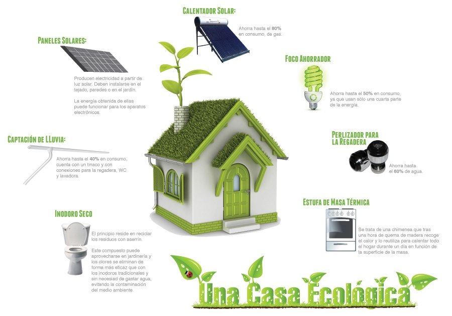

INTRODUCCION
En este proyecto crearemos una casa
ecologica, con materiales reciclados
con el fin de ayudar al medio ambiente.
Una casa ecologica es aquella que logra
las condiciones optimas de habitabilidad
con el minimo consumo energetico,
teniendo
en cuenta la orientacion de la construccion
el terreno y la naturaleza que la rodea.

La sobrepoblacion de casas en Tijuana
puede llevar a buscar mas terrenos para
construirlas pero como no hay mas esapcio
algunas personas deciden invadir lugares
como por ejemplo los parques, impidiendo
los espacios de recreacion y de deportes.
Un proyecto de casa
ecologicas en Tijuana puede
tener un buen impacto en el
medio ambiente de la ciudad,
sin embargo este proyecto
puede tardar algun tiempo,
la cuidad caontaminaria menos al
medio ambiente, no habria
mucho daño
a la capa de ozono
Este equipo o
bueno este grupo de amiwitos
son los mejores, trabajamos juntos
y tratamos de aprovechar
el tiempo de la mejor manera para
terminar la casa rapido.
Aprendimos a reutilizar las cosas
que tenemos de
una manera
un tanto creativa, tratando de
reutilizarlas para evitar el daño
ambiental, este tema es muy importante
porque estamos hablando
de como podemos evitar el daño al
medio y como nosotros podemos
aportar
para evitar tanta contaminacion.